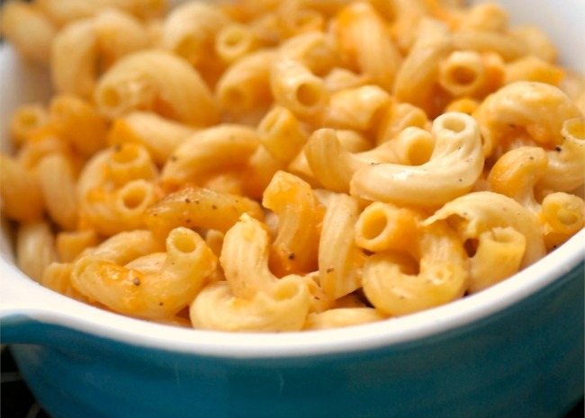

Lasagna

Description
Lean how to make delicious mac & cheese just in minutes
Follow the folloing recipe and soon you will be enjoying 5 star restaurant mac & cheese.
- 1 (12 ounce) package macaroni
- 1 egg
- 2 cups milk
- 2 tablespoons butter, melted
- 2 ½ cups shredded Cheddar cheese
- salt and pepper to taste
-
Preheat the oven to 350 degrees F (175 degrees C). Lightly grease a 2-quart baking dish.
-
In a large pot of salted water, lightly boil the macaroni for about 5 minutes until half-cooked.
-
Whisk the egg and milk together in a large cup. Add butter and cheese to the egg and milk. Stir well.
-
Place the lightly cooked macaroni in the prepared baking dish. Pour the egg and cheese liquid over the macaroni,
sprinkle with salt and pepper, and stir well. Press the mixture evenly around the baking dish.
-
Bake uncovered, for 30 to 40 minutes, or until the top is brown.